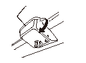
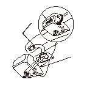
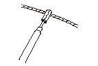
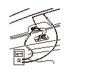

ガラス アンテナの点検
アンテナ ターミナル カバー（A）を矢印の方向に浮かせる。（カバー内側のフック（B）が外れる。）
アンテナ ターミナル カバー（A）のフックは壊れやすいため、無理に浮かせないこと。

矢印1の方向にカバーを押しながら、さらに矢印2の方向へカバーを引き、カバー内側のフック（A）を外し、アンテナ ターミナル カバー（B）を取外す。

テスタ棒（A）の先にアルミはく（B）を巻く。

ガラス アンテナ線の接続端子（A）にテスタ棒を当て、もう一方のアルミはくを巻いたテスタ棒をガラス アンテナに沿って軽くすべらすように動かして行き、導通のなくなる箇所がないかを点検する。
接続端子にテスタ棒を当てて点検をした場合、導通が出ない場合があるので注意する。


 接続端子にテスタ棒を当てて点検をした場合、導通が出ない場合があるので注意する。
接続端子にテスタ棒を当てて点検をした場合、導通が出ない場合があるので注意する。